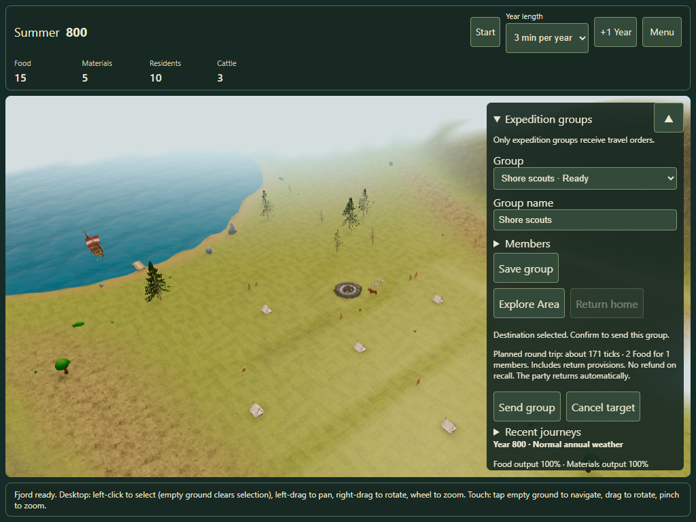
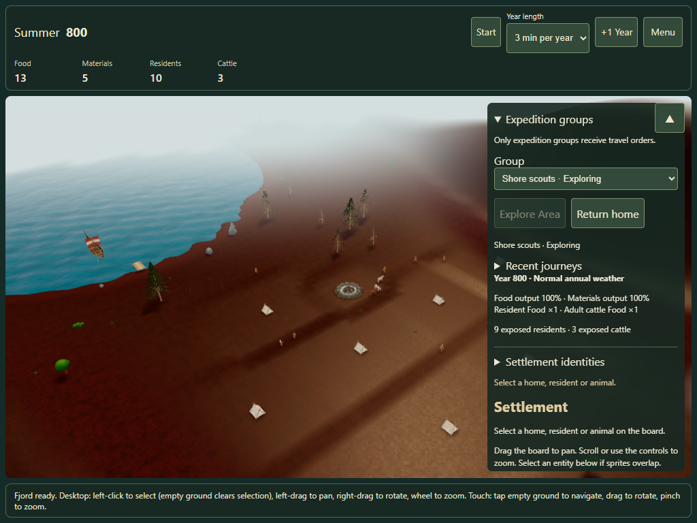
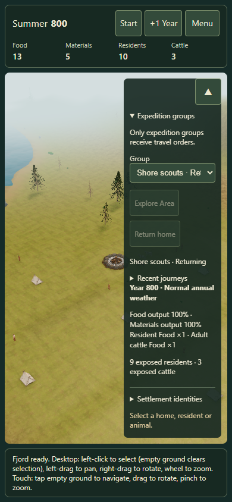

Expedition Groups · Explore Area
Existing fog campaigns keep their knowledge and can create groups immediately. If recovery is offered for a different campaign, choose your intended campaign; the discovery query never silently changes its saved settings.
Open Menu → Expedition groups. Name a group, expand Members and select eligible residents. Choose Explore Area, tap a land point and confirm the whole-trip Food charge. The menu collapses while targeting. Start the clock to travel; Return home recalls the party. Ordinary residents still move autonomously.

Round-trip provisions before dispatch
Actual group travel and gradual discovery
Compact touch controls during returnDesktop Edge with touch emulation is verified. Physical iPad/Safari review remains open. The combined exploration prototype stays opt-in until owner approval.